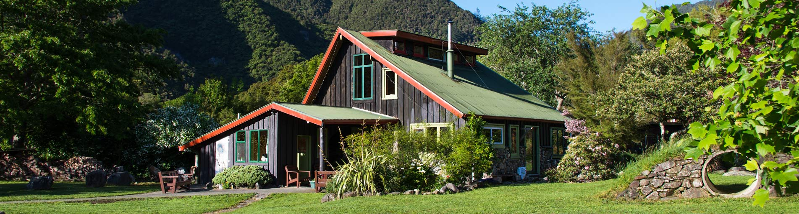
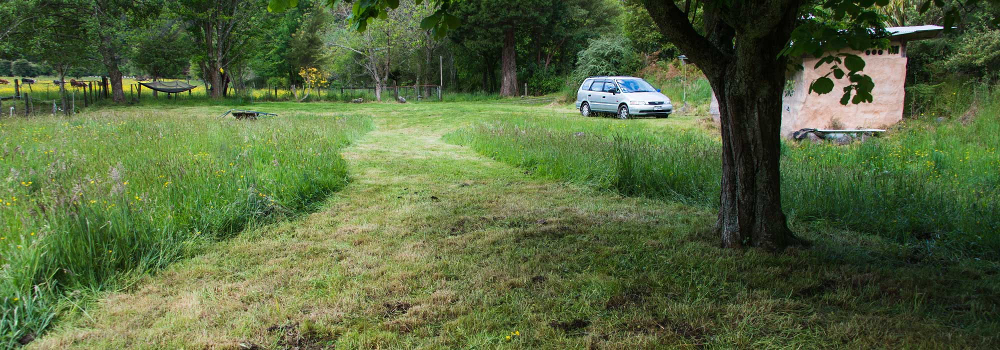
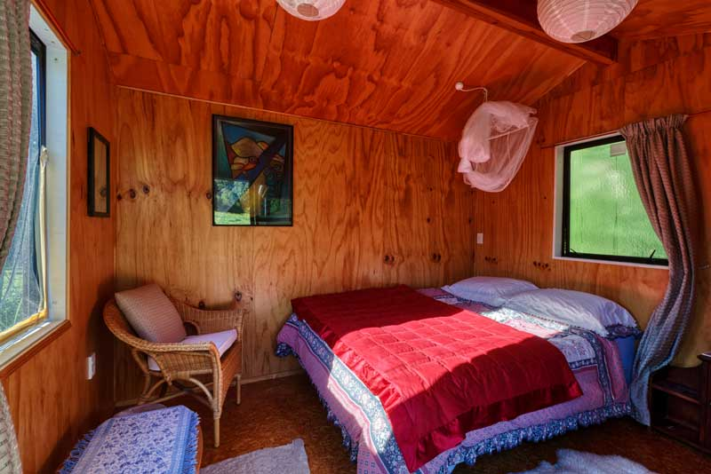
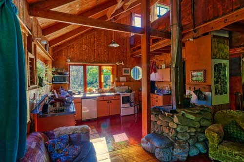

Settle into valley time
A little room
to slow down.
A welcoming guesthouse, a garden hideaway, or a place to pitch your tent. Simple stays, surrounded by green.


01 / The backpackers
A house with
a bit of heart.
Private rooms and easy company in our timber-lined community house. Cook a meal, pull up a chair, and make yourself comfortable.
- Bedding provided
- Shared kitchen
- Hot shower
- Free Wi-Fi
- Laundry
- Off-street parking
- Games & puzzles
- Musical instruments

02 / The garden cabin
Your own
quiet corner.
Tucked into the garden, our little cabin has a queen bed and a private deck. A lovely option for a couple or anyone looking for a little more privacy.
Ask about the cabin
03 / The campground
A patch of grass.
A sky full of stars.
Bring your tent or campervan to our small campground. Facilities include a toilet, shower, laundry, and spring drinking water. There’s no camp kitchen, so come prepared to cook for yourself.
Space is limited. Please contact us before travelling, and pack insect repellent for the sandflies.
Ask about campingA little planning goes a long way
Before you pack.
Seasonal stays · Please enquire first
Accommodation and camping are closed May–October. Contact us to confirm availability, current rates, and payment arrangements. The original site notes that EFTPOS is unavailable.
The last 5 km to Rainbow is a narrow, single-lane gravel road. The community advises taking it slowly, around 30 km/h. You’ll find us at 688 McCallum Road, 11 km from Tākaka.
Getting here

Your own little corner of Golden Bay
Stay for a little.
Take a breath.
Tell us what you have in mind. We’ll help you find your place.